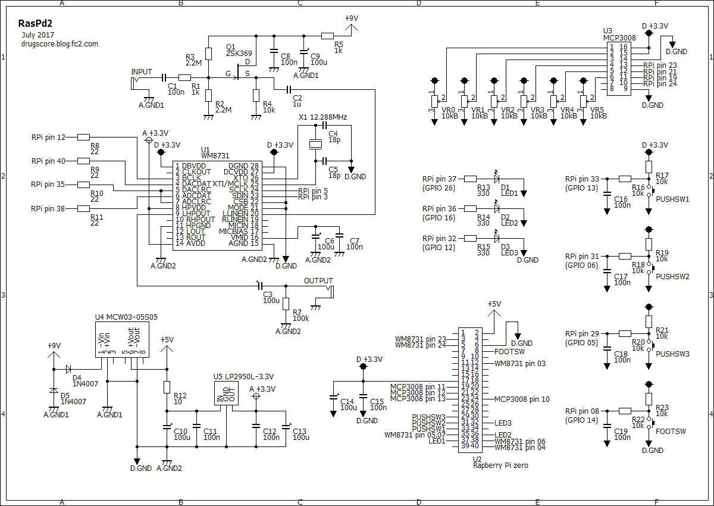

RasPd2 ハードウェア編
2017年07月17日 カテゴリー：Raspberry Pi エフェクター
Raspberry Pi Zeroを使い、コンパクトなデジタルエフェクターを作りました。今回はLCDがなく、単機能エフェクターとして使うことを想定しています。オーディオインターフェイスはUSBではなくI2Sで通信するとレイテンシーが低減できるようで、WM8731というICを使用しました。レイテンシー実測値は7msとほとんどリアルタイムに近いレベルとなりました。
WM8731については、別記事に記載しています。
→WM8731 設定メモ
Raspberry Pi Zeroでもほとんど設定は同じですが、ADC High Pass Filterはオンにするとノイズが増えたためオフにしました。音量は Master 56(-9dB) Capture 87(+9dB) です。
SN比を稼ぐため、RasPd1のときには外部回路で入力前増幅→出力後減衰を行っていました。WM8731のデータシートを見てみると、IC内部でアナログな増幅・減衰ができるため外部回路は入力バッファのみとしました。電源電圧が3.3Vと低いですが、+9dB（2.8倍）程度までは歪まないだろうと思います。
▽回路図

出力のコンデンサが100uFと大きい値なのはイヤホンを直接繋ぐためでしたが、誤って大出力になったとき危険なのでイヤホンでのテストはしない方がいいでしょう。各スイッチには少し面倒ですがチャタリング防止の抵抗やコンデンサを入れています。とりあえずたくさんコントロールを準備したという感じで、割り当てをどうするかは未定です。WM8731への接続に入っている抵抗（ダンピング抵抗）はありあわせの22Ωにしましたが、役割はあまり理解していません。
ノイズ対策のため、電源・GNDは4系統に分かれています。
[アナログ9V電源・GND（バッファ用）]
↓
[デジタル5V電源・GND(Raspberry Pi用)] → [アナログ3.3V電源・GND(WM8731用）]
↓
[デジタル3.3V電源・GND(WM8731用）]
▽レイアウト
▽PCB（横111.8mm縦73.7mm）
あまり見慣れない水晶振動子というパーツがありますが、ケースが金属なので基板から少し浮かせて取り付けています。周波数の値はそんなに高精度のものでなくていいようです。WM8731には、シングルタイプのピンソケットを使うことでICの下にパーツを配置できるようにしています。レイアウト上部の基板間の配線は、着脱式にして後からの修正をしやすくしました。また、GND等のいくつかのジャンパーは基板の裏側（半田面）で配線しています。
今回もノイズには悩まされました。まずサーというホワイトノイズがRasPd1より多く出ていました。Raspberry Pi自体から電磁波的ノイズが出ているのかと思いアルミホイルでシールドしてみましたが効果なしでした。pedalSHIELD DUEのようにRチャネルに位相反転した入力を入れて、ノイズキャンセルしようとしましたがこれもダメでした（LとRでノイズの乗り方が違うようです）。結局電源を分離すると解決したため、ノイズ源はWM8731用アナログ電源だったようです。
その他にもギターを繋いだときに少しキーン&プツプツというノイズが出ていました。RasPd2内蔵のバッファを一旦外し、別電源のバッファを前段に繋いだ場合はほとんどノイズが消えたため、電源とGNDの取り方が原因と考えました。試行錯誤の結果、絶縁型のDC-DCコンバータを使用し、その出力部に各GNDを集めるというレイアウトになっています。
下写真のように基板を2枚重ねにしています。
ケースは高さがあるHAMMOND1590BSです。発熱が心配ですが、裏フタをあけた状態ではCPU温度50℃程度で安定しているようです。そのうち無線接続可能なRaspberry Pi Zero Wに変更し、改めて長時間使用時の安定性を調べようと思います。
---以下2017年12月24日追記---
現状以下の問題点があるので、作り直す必要がありそうです。
・微妙にノイズが残っている
・ダイナミックレンジが狭い
・たまにビーというエラー音のような音が入る
ソフトウェア編へ プログラミング編へ